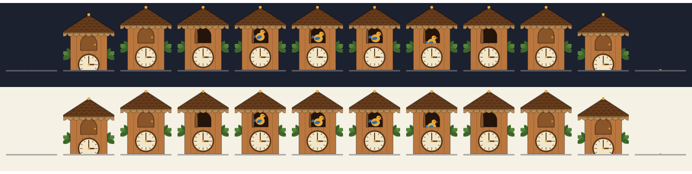
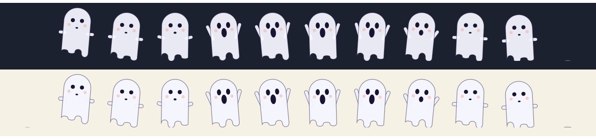
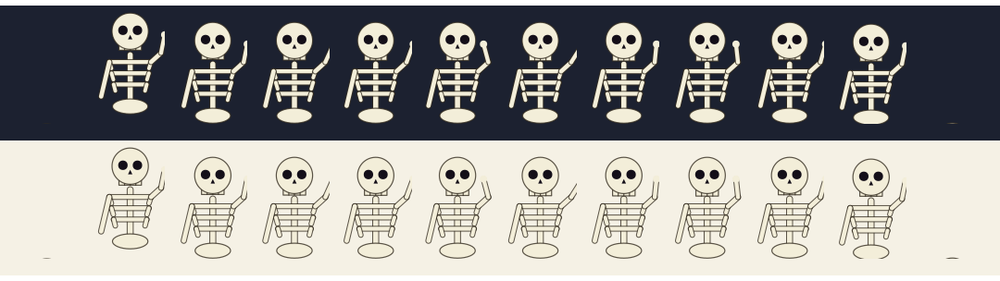
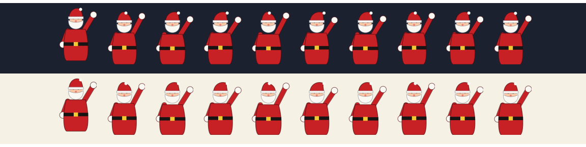
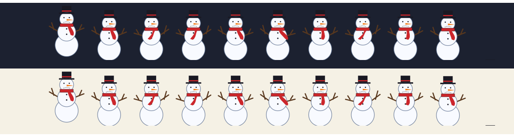
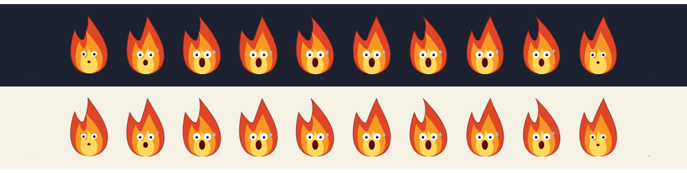

Um dock.
Vários ambientes.
ATLAS é um dock para o GNOME com lente de ampliação. Cada ambiente guarda seus apps, tem uma cor e muda com um giro da roda do mouse.
Passe o mouse sobre o dock. Gire a roda para trocar de ambiente.
O que cabe no dock
O nome é uma sigla, e cada letra é uma parte do dock.
- AAmbientes
- Conjuntos de apps com nome e cor, como Trabalho, Estudo e Lazer. Troque pela roda do mouse, por Super+Alt+←/→ ou por Ctrl+Alt+1 a 9. Um ambiente pode entrar sozinho quando o Não perturbe liga.
- TTarefas
- Pomodoro, cronômetro, timer, contagem regressiva e nota, sempre à mão ao lado dos apps.
- LLançadores
- Os favoritos do GNOME, coleções que guardam um grupo de apps num só ícone e o botão da grade de apps.
- AAplicativos
- Indicador de app aberto, prévia ao vivo das janelas ao parar o mouse e menu de clique direito para fixar, abrir nova janela ou fechar.
- SSistema
- Bateria, rede, CPU e memória, música e mensagens não lidas. Em posição embaixo, à esquerda ou à direita, com auto-ocultar e uma doca por tela.
Treze widgets, todos desenhados
Cada ambiente liga os seus. Os tiles são desenhados com anéis, gráficos e um relógio de ponteiros, e abrem um painel ao clicar.
Mascotes que aparecem na hora certa
Desligados por padrão e desenhados em vetor, sem arquivo de imagem no dock. Ficam fora de cena com o Não perturbe ligado, com o dock escondido e em tela cheia. As tiras abaixo mostram os quadros de cada animação.






Leve o bastante para esquecer que existe
Medido por dentro, com um cronômetro próprio em cada temporizador e cada desenho. Comparar o gnome-shell ligado e desligado só mede ruído.
Feito para uma versão só
Cada distribuição e cada configuração do Linux muda alguma coisa, e não dá para prometer que tudo funciona em todas. Por isso o ATLAS mira um ambiente e funciona bem nele.
- Testado
- GNOME Shell 46, em Wayland e em X11
- Não testado
- Outras versões do GNOME e outras distribuições
- Tecnologia
- Extensão em GJS, ajustes em GSettings, janela de preferências em libadwaita
- Situação
- Projeto pessoal em desenvolvimento, de código fechado. Versão 0.3.0